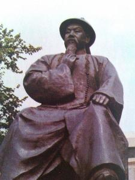
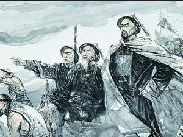

主要成就
放眼世界 
千古未遇的西方资本主义强敌入侵， 促使林则徐“ 最先从封建的闭关自守的昏睡状态中觉醒，以全新的态度睁眼看世界” 。林则徐赴广州主持禁烟后，在与侵略者斗争的实践中意识到自己对西方知识的贫乏、国人对王朝之外世界的无知，他急于改变“沿海文武大员并不谙诸夷情，震于英吉利之名，而实不知来历” 的状况，于是开始有意识有目的地收集外文报刊、书籍进行翻译，以求获得有价值的情报，加深朝廷、国人对“西洋”的了解。
通过分析外国的政治、法律、军事、经济、文化等方面的情况，他认识到只有向西方国家学习才能抵御外国的侵略。
他提出为了改变军事技术的落后状态应该制炮造船的意见；他亲自主持并组织翻译班子，翻译外国书刊，把外国人讲述中国的言论翻译成《华事夷言》，作为当时中国官吏的“参考消息”；为了解外国的军事、政治、经济情报，将英商主办的《广州周报》译成《澳门新闻报》；为了解西方的地理、历史、政治，较为系统的介绍世界各国的情况，又组织翻译了英国人慕瑞的《世界地理大全》，编为《四洲志》；适应当时对敌斗争和对外交涉的需要，着人迅速编译了《国际法》，这在中国国际法学史上是一个划时代的事件： 它标志着西方国际法著作开始正式传入中国，，标志着近代国际法开始在我国应用于对外交涉，标志着中国近代国际法学史的开端。从理论上说，林则徐是中国引进国际法的第一人、中国近代外交事业的先行者、中国国际法学的开山者。
治理水利
林则徐不仅是我国历史上伟大的民族英雄，同时还是一位出色的治水专家，在其仕宦生涯中，十分重视并努力举办水利事业，兴修浙江、上海的海塘、太湖流域各主要河流等水利工程，治理运河、黄河、长江。林则徐治水注重深入实际，事必躬亲，同时还重视赈灾济贫，这些都是其“重民思想”的反映。林则徐曾著《北直水利书》。《北直水利书》除经济之外，亦有治水方略，后来林则徐的学生冯桂芬将《北直水利书》改编成《畿辅水利议》。
道光十一年十一月廿二（1831年12月25日），林则徐擢升东河河道总督。到任后，林则徐立即补修治水方面的知识，验催河工，保持质量，处分办事不力之官员，下令检验河堤料垛，他向道光帝呈上的奏折中表示：“周历履勘，总于每垛夹档之中，逐一穿行，量其高宽丈尺，相其新旧虚实，有松即抽，有疑即拆，按垛以计束，按束以称斤，无一垛不量，亦无一厅不拆。”
林则徐做事如此认真，令贪官无可作假，桃汛来时，两岸安然无恙，道光帝多次称赞。当林则徐的对治水方面的知识和经验日丰，诗人张际亮向林则徐提议将黄河河道改道北流，从山东利津入海。林则徐也有同感，但民意和官员都反对此治河方略，加上林则徐不能独揽全局，张际亮之提议遭否决。直到林则徐逝世前不久，还表示张际亮的治河方略是对的。林则徐逝世后，咸丰五年（1855年），黄河改道，循大清河至利津入海。
安定陕西
道光二十六年七月，林则徐任陕西巡抚后，便上书皇帝，宣称陕西“ 东北毗连晋豫，西南壤接川甘，道路纷歧，奸究易于出没。如佩执凶器之刀匪，此拿彼逃，最为民害” 。并表示决心要把“ 除暴安良” 、“ 严缉捕以靖地方”，作为接任陕西巡抚后的“ 首务” 。当时刀客的活动主要在关中地区，尤以渭南、富平、大荔、蒲城一带最盛行。他们“ 有窝巢以为藏身之固， 有器械以为抵御之资” 。所以“ 不独兵役避其凶锋”，即州县营员亦“ 惜费惮劳” ， “ 望而却步”。林则徐上任后， 对地方官吏兵勇的所谓“ 锢习” ，首先是“ 剖析开导， 务令极力破除”， 增强他们“ 缉匪” 的勇气和信心，然后以“ 马得讽纠众夺犯伤差案”，从渭南刀客下手。此案原发生在五、.六月间，七、八月林正式接任后，便“ 亲提研鞠”，除判首犯马得讽以斩刑、“ 就地正法” 外， 而将刀客赵恩科子、史双儿等人，“ 不分首从，发云贵两广极边烟瘴充军” 。到是年底，由于林则徐积极督剿，在关中东部各县，以及陕北的安塞等县，又相继缉获146 人，其中明确称为“ 刀匪” 的有46人， 均从严惩处 。对林则徐积极镇压刀客的行动， 道光帝朱批“ 所办甚好”，大加赞赏。
防卫新疆
林则徐不顾年高体衰，从伊犁到新疆各地“西域遍行三万里”，实地勘察了南疆八个城，加深了对西北边防重要性的认识。林则徐所译资料中发现沙俄对中国的威胁，促成了他抗英防俄的国防思想，成为近代“防塞论”的先驱。于是他明确向伊犁将军布彦泰提出“屯田耕战”，有备无患。他还领导群众兴修水利，推广坎儿井和纺车，人们为纪念他的业绩，称为“林公井”“林公车”。林则徐根据自己多年在新疆的考察，结合当时沙俄胁迫清廷开放伊犁，指出沙俄威胁的严重性，临终时曾大声疾呼，告诫国人：“终为中国患者，其俄罗斯乎！吾老矣，君等当见之。” 果不其然，六十余年之后，数百万领土已被蚕食鲸吞，历史证明了林则徐是正确的！
广州禁烟

1839年3月10日，奉命为钦差大臣林则徐到达广州查禁鸦片。在广州禁止鸦片的过程中，林则徐意识到英国殖民者不肯放弃罪恶的鸦片贸易，而且蓄谋要用武力侵略中国。为抗击鸦片侵略，战胜敌人，他进行了大量的“师敌之长技以制敌”的军事变革实践。
在军事方面，他着手加强和改善沿海一带防御力量。专门派人从外国秘购200多门新式大炮配置在海口炮台上。为了改进军事技术，又搜集并组织了大炮瞄准法，战船图书等资料。虽然林则徐对西方认识比较肤浅，接触西学的目的是出于外交、军事的需要，但毕竟开创了中国近代学习和研究西方的风气，对中国近代维新思想起到启蒙作用。
林则徐将西方国家的“战船制造、火器制造和养兵练兵”作为探求军事变革的重要内容。组织官兵在东较场（今广东省人民体育场一带）学习演练西洋武器，学习西法练兵，并经常亲往阅操，抓紧训练官兵。他还会同两广总督邓廷桢、广东水师提督关天培、广东巡抚怡良等在东较场检阅军队，准备迎击英国侵略军。当时，数百名精选出来的官兵演习了排枪、火炮等，林则徐看后大为赞赏。为激励官兵的爱国心和责任感，林则徐当即挥毫赋写新联一副，悬挂于东较场的演武厅内。
对联云：“小队出郊峒愿士卒功成净洗银河长不用，偏师成壁垒看百蛮气慑烟消珠海有余清。”〔见萨嘉榘辑：《林则徐联句类集》卷1〕林则徐的对联，措词磊落，充满爱国主义的浩然正气，它凝成一股无形的精神力量，激励着东较场上练武的官兵们，成为官兵刻苦训练的精神动力。
林则徐在广东一边禁烟，一边积极备战，修建炮台，拉拦江木排铁链，相信“民心可用”，招募五千多渔民编成水勇，屡败英军的挑衅。在1839年下半年，取得九龙之役、川鼻官涌之役等反击战的胜利。
自1839年3月林则徐到达广州查禁鸦片起，至1842年10月清廷革林则徐两广总督职止，林则徐在广州主持禁烟抗英军事斗争共19个月。
林则徐敢于学习外国先进科学技术的精神，受到人们高度赞扬，被称为“开眼看世界的第一个人”。